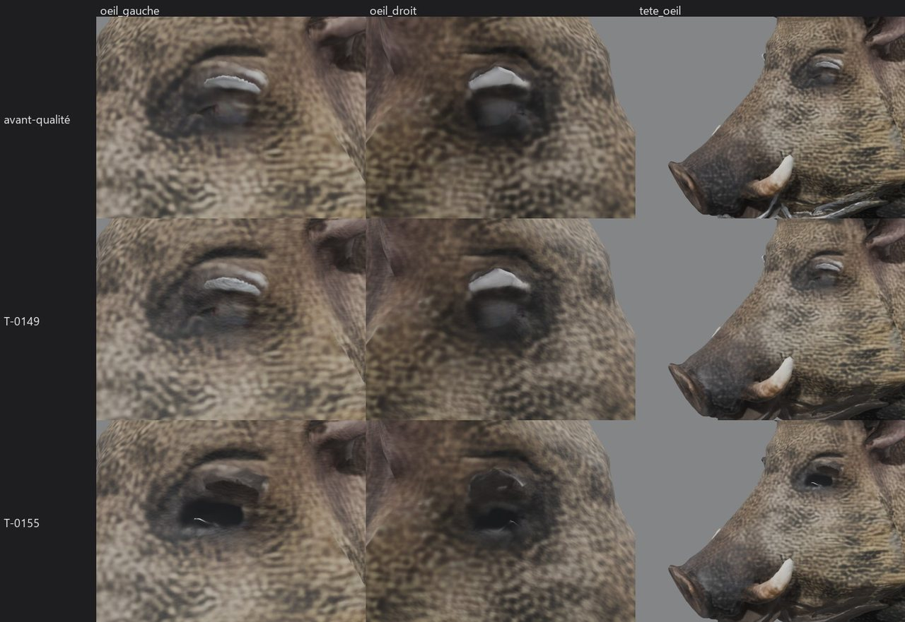
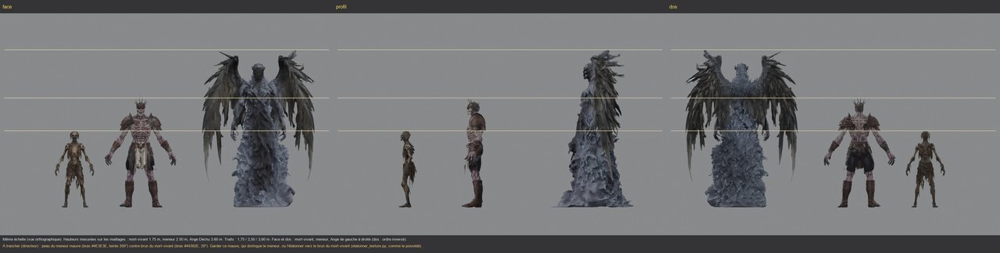
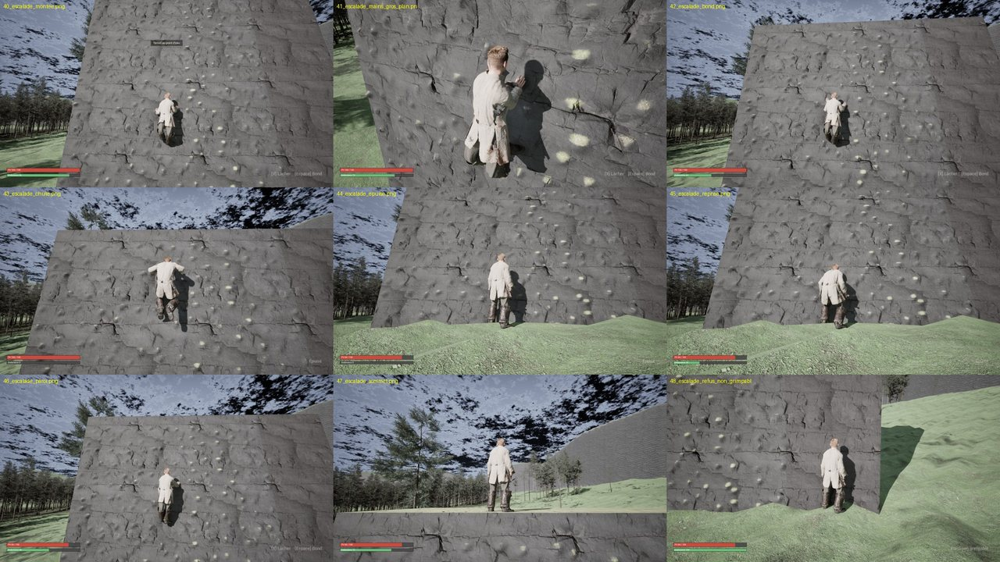
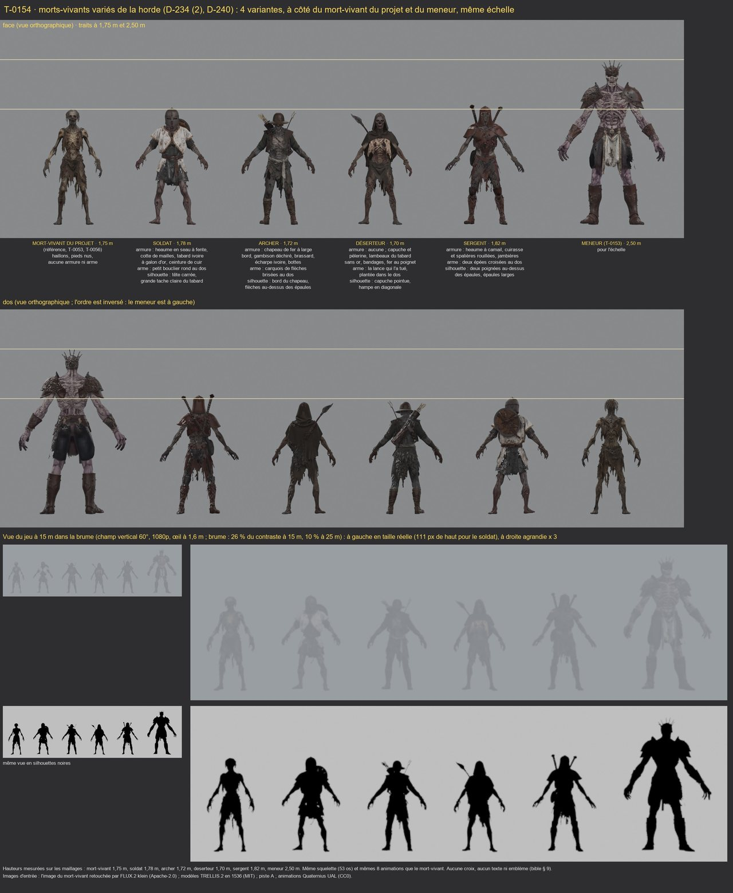

Sanglier : l'œil sombre
ValidéT-0155 · D-251

L'œil presque noir et humide de l'image de départ (D-251) ; la crête reste couchée et sombre. Animations et forme inchangées.
Sur le PC : E:/aaa-proto/essai/gibier/sanglier/
Deuxième journée de la semaine. Le directeur a choisi la suite au point du matin : l'escalade libre dans Unreal, puis le meneur de la horde et les morts-vivants variés en modèles 3D.
Mise à jour : 07/10/2026 à 17:28
Chaque ticket a un exécutant et un vérificateur ; une correction est confiée à un agent neuf (D-231). Un seul agent à la fois dans Unreal.
Le prototype jouable ; un seul agent à la fois dans le projet.
Grimper sur la roche marquée, coût en Endurance, chute à zéro, reprise, détection des prises, caméra, pose provisoire faite par programme et paroi d'essai montée par l'automate.
ValidéLancé à 04:17, livré à 08:00 (commit e01962d), validé à 08:12. Le vérificateur a tout relancé : 110 tests sans échec, essai en jeu vert (coûts, chute à zéro, reprise, paroi montée de bout en bout, refus sur une limite), aucune main dans la roche sur 2 397 images, version jeu recompilée sans avertissement. La pose est raide mais provisoire (P1-06). Reste hors du ticket : l'escalade des murs bâtis (Exploration § 1).
Demain matin : les MetaHumans des soldats de la patrouille (D-250 (1)) ; puis l'arc (D-248 (2)), la saison et la météo (D-232, D-233, D-236), l'import du meneur.
Les modèles du prototype, faits sur ce PC, sans Unreal.
Un grand mort-vivant d'environ 2,5 m qu'on voit de loin, en qualité améliorée, avec le squelette et les animations du mort-vivant, prêt à remplacer le meneur provisoire.
ValidéLancé à 04:17, livré à 07:03, renvoyé en correction à 07:27 (pieds enfoncés jusqu'à 10,7 cm, planches à compléter), corrigé par un agent neuf de 07:29 à 08:07, validé à 08:19 : pieds à 2,5 cm au plus sous le sol sur les 291 images (le mort-vivant s'enfonce plus), bottes entières, taille et squelette inchangés. À reprendre avant de le montrer en entier : pendant la chute de l'animation de mort, une spalière passe sous le sol (10,5 cm).
Au moins 4 morts-vivants différents (armure, arme, silhouette), tirés du modèle existant, pour que la horde ne soit plus faite de clones.
ValidéLancé à 08:20, livré à 09:37, renvoyé en correction à 10:08, corrigé par un agent neuf de 10:11 à 10:42, validé à 11:00 : les couleurs vives sont retirées (bleu du soldat, rouge du déserteur, bleu nuit de l'archer), la forme et les animations sont identiques. Restent soumis au directeur : la main de l'archer dans son chapeau (une image, nette à 1 m), la main du déserteur dans sa jambe (un tiers de seconde), les épées du sergent sous le sol quand il meurt sur le dos.
L'œil petit et presque noir de l'image de départ, à la place de l'œil pâle ; la crête reste couchée et sombre.
ValidéLancé à 04:31, livré à 05:18, validé à 05:31 : œil presque noir et humide comme sur l'image de départ, rien de changé ailleurs (animations, maillage, autres bêtes identiques). De très près, la paupière reste anguleuse. La fiche du sanglier dans « Modèles 3D » sera mise à jour avec le meneur.
Cinq nouvelles fiches animées (le meneur, le soldat, l'archer, le déserteur, le sergent) et le sanglier rafraîchi.
ValidéLancé à 11:02, livré à 11:21, validé à 11:30, publié à 11:40 : cinq nouvelles fiches animées (le meneur, le soldat, l'archer, le déserteur, le sergent) à côté du mort-vivant, et le sanglier avec son œil sombre ; aucune erreur, toutes les animations jouent. La page grandit de 39 Mo (« Pages du projet » fait maintenant environ 220 Mo sur 256).
Puis les oiseaux, les laies et les défauts connus (D-235) ; l'import du meneur et des morts-vivants dans Unreal.
Ce qui a été livré ou validé aujourd'hui : modèles 3D et prototype.
T-0155 · D-251

L'œil presque noir et humide de l'image de départ (D-251) ; la crête reste couchée et sombre. Animations et forme inchangées.
Sur le PC : E:/aaa-proto/essai/gibier/sanglier/
T-0153 · D-234 (2) · D-240

Un grand mort-vivant de 2,50 m, champion de l'Ordre tombé : heaume couronné de pointes, grandes spalières, côtes à nu, tabard ivoire et or. Même squelette et mêmes animations que le mort-vivant, prêt à remplacer le meneur provisoire dans Unreal. Trois variantes d'image de départ (champion, porte-étendard, déserteur) attendent l'avis du directeur.
Sur le PC : E:/aaa-proto/essai/horde/meneur/
T-0152 · P1-05 · D-248 (4)

Le héros grimpe la roche marquée en dépensant son Endurance (barre verte), bondit, chute quand elle tombe à zéro, puis se raccroche une fois reposé. La pose est provisoire, faite par programme : les vraies animations viendront avec P1-06.
Sur le PC : E:/aaa-proto/unreal-v2/mesures/t0152/
T-0154 · D-234 (2) · D-240

Quatre soldats et déserteurs de l'Ordre morts, tirés du mort-vivant existant : le soldat (heaume en seau, tabard ivoire, bouclier au dos), l'archer (chapeau de fer, carquois), le déserteur (capuche, la lance qui l'a tué plantée dans le dos) et le sergent (heaume à camail, deux épées croisées au dos). À 15 m dans la brume, on les reconnaît à leur silhouette.
Sur le PC : E:/aaa-proto/essai/horde/morts-vivants/
Début de la journée : point du projet pour le directeur.
Quota recalé sur le chiffre du directeur : 18 % de la semaine utilisés.
D-250 : l'escalade d'abord dans Unreal, les MetaHumans des soldats ensuite ; le meneur puis les morts-vivants variés en modèles 3D ; pas de nuit en autonomie ce soir.
Lancement de T-0152 (escalade) et de T-0153 (meneur de la horde).
Le directeur part au travail jusqu'au soir : T-0154 s'enchaînera seul après la validation du meneur.
D-251, le sanglier : crête couchée et sombre gardée, œil sombre comme sur l'image de départ.
Lancement de T-0155 (l'œil du sanglier).
T-0155 livré (l'œil du sanglier) ; vérification lancée.
T-0155 validé : le sanglier a l'œil sombre de l'image de départ (D-251).
T-0153 livré (le meneur de la horde, 2,50 m) ; vérification lancée.
T-0153 à corriger : pieds enfoncés dans le sol pendant certaines animations, planches à compléter.
8 boucles d'attente oubliées (dont 4 du meneur et 4 d'hier) arrêtées par le Chef ; l'escalade continue.
Correction 1 de T-0153 confiée à un agent neuf.
T-0152 livré (l'escalade libre) ; vérification lancée.
Correction 1 de T-0153 livrée (pieds relevés : 2,5 cm au plus sous le sol, moins que le mort-vivant) ; nouvelle vérification lancée.
T-0152 validé : l'escalade libre est dans le prototype. Les MetaHumans des soldats passent à demain matin (quota du jour).
T-0153 validé : le meneur de la horde (2,50 m), pieds corrigés.
Lancement de T-0154 (morts-vivants variés).
T-0154 livré (4 morts-vivants variés) ; vérification lancée.
T-0154 à corriger : deux couleurs vives à retirer (soldat, déserteur), une description et deux écritures sur C: à reprendre. Le fichier inconnu de 38,7 Mo sur C: vient de Steam, pas des agents.
Correction 1 de T-0154 confiée à un agent neuf.
Correction 1 de T-0154 livrée (couleurs vives retirées sur trois variantes) ; nouvelle vérification lancée.
T-0154 validé : 4 morts-vivants variés pour la horde (soldat, archer, déserteur, sergent).
Lancement de T-0156 : le meneur, les morts-vivants variés et l'œil du sanglier sur la page « Modèles 3D ».
T-0156 validé.
Page « Modèles 3D » publiée : le meneur, les 4 morts-vivants variés et le sanglier à l'œil sombre.
D-252 : le meneur « champion » est gardé, avec sa peau mauve ; les valeurs de l'escalade sont gardées comme valeurs de départ ; les défauts invisibles à distance de jeu sont acceptés et notés.
Questions en attente du directeur.
2 questions attendent leur réponse. Personne ne les tranche à la place du directeur.
Surnoms de l'entité : quelle liste ? (à choisir à deux, dans le fil « Échanges »)
Le sanglier : soies couchées et crête sombre (aujourd'hui), crête dressée, ou dressée seulement quand il charge ? Et ses yeux : l'œil pâle de l'ancienne version (aujourd'hui) ou l'œil sombre de l'image de départ ? À regarder sur la planche avant/après du sanglier.
Réponse du directeur : Crête couchée et sombre, gardée ; œil sombre, comme sur l'image de départ (D-251, T-0155).
Le meneur : quelle image de départ (champion, porte-étendard ou déserteur, planche des variantes) ? La démarche lourde proposée ? La teinte, plus sombre et plus rouge que l'image : l'étalonner ?
Réponse du directeur : Champion gardé, peau mauve gardée (D-252) ; démarche lourde encore à trancher.
L'escalade, valeurs proposées (réglables) : 8 d'Endurance par seconde en grimpant, 2 immobile, 20 par bond, 10 pour se raccrocher ; chute sans dégâts jusqu'à 5 m, puis 8 PV par mètre ; après une chute à zéro, se raccrocher seulement au sol à 35 d'Endurance ; touches X / Carré pour prendre et lâcher, Espace / A pour bondir. À garder ?
Réponse du directeur : Valeurs gardées comme valeurs de départ, réglables après des parties d'essai (D-252).
Le sanglier : ses franges éclaircies (le gris des franges du cou ramené vers la teinte de la fiche) sont-elles à garder ? Question restée ouverte, notée dans sa fiche de « Modèles 3D ».
Défauts des nouveaux modèles, invisibles à distance de jeu : la cuisse du meneur dans sa cotte, la main de l'archer dans son chapeau, la main du déserteur dans sa jambe, les épées du sergent sous le sol quand il meurt sur le dos. À corriger (changer le dessin des modèles) ou à accepter ?
Réponse du directeur : Acceptés et notés, à corriger plus tard avec des animations propres à chaque modèle (D-252).
E:\aaa-proto\unreal-v2 : le prototype Unreal (escalade) · E:\aaa-proto\essai\horde\ : le meneur et les morts-vivants variés · D:\aaa-game\.equipe\taches (les tickets) · D:/aaa-game/.equipe/decisions.md (D-250 à D-252)